Bitterroot Valley, MT · Masonry, Chimney Rebuild & Flatwork
Worth knowing if your home has an older masonry chimney: at this property, a previous HVAC installer had run the furnace exhaust directly into an unlined masonry chimney. Natural gas exhaust is acidic, and combined with normal moisture and Montana's freeze-thaw cycles, that acidic exhaust slowly destroys unlined masonry from the inside out — which is exactly what had happened here. We rebuilt the chimney with a proper stainless steel liner, cast new concrete chimney caps, and finished it out with a wood stove on a new stone hearth inside.
The rest of this gallery is a look at the flatwork and concrete we do on a regular basis — foundations, driveways, sidewalks, and decorative scored patios — built to hold up through Montana winters, whether or not it's tied to a specific named project.
Read the full story on this house's exterior in 409 S 4th St — Full Exterior Remodel.
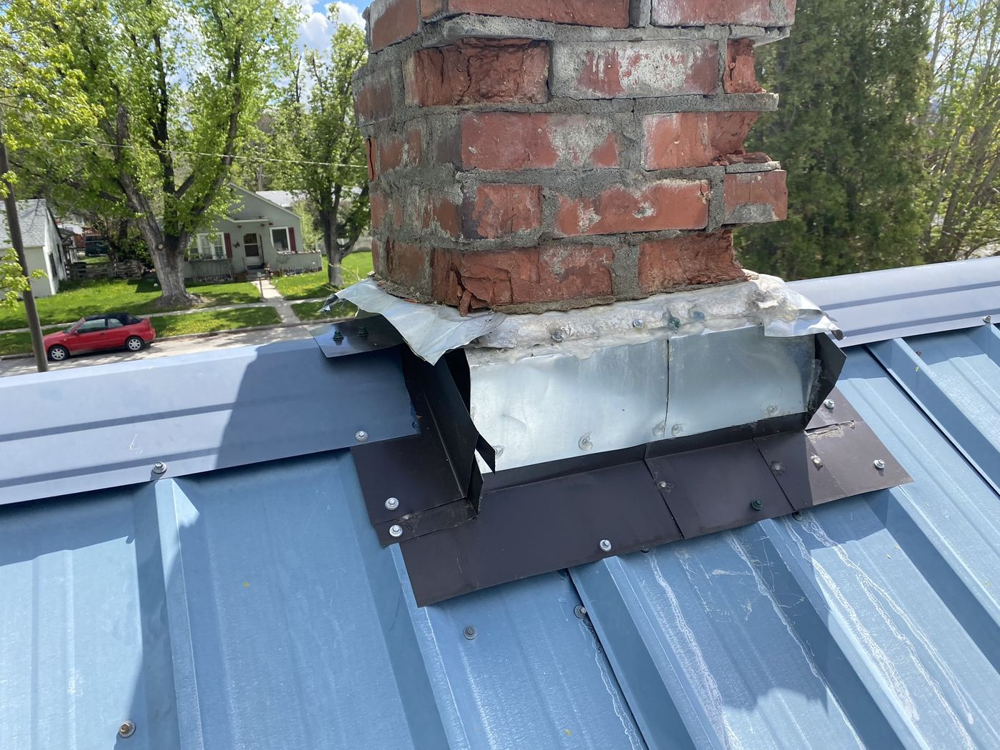
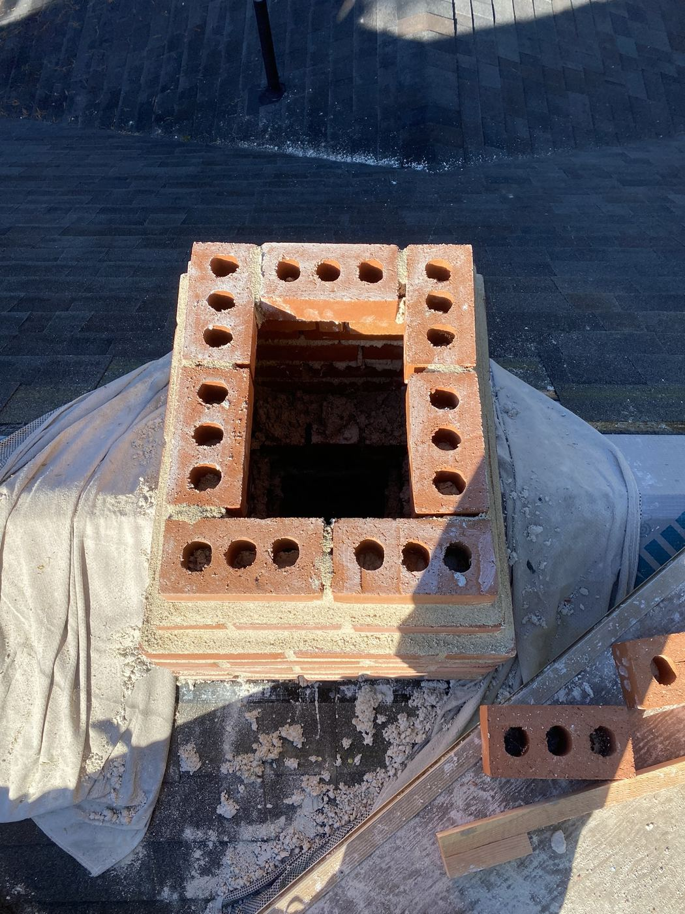
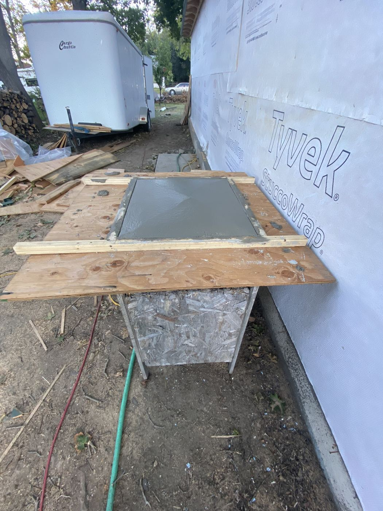
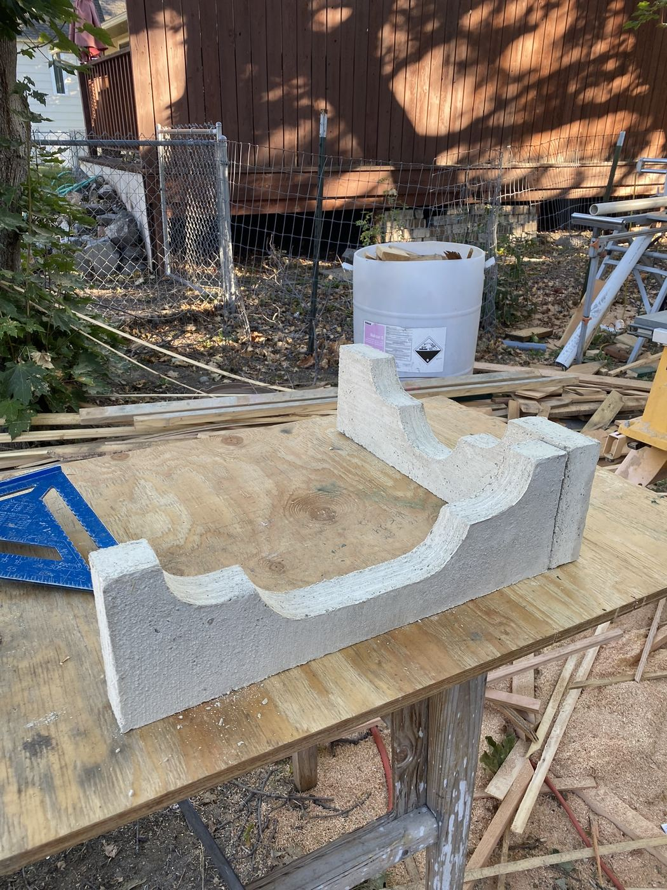
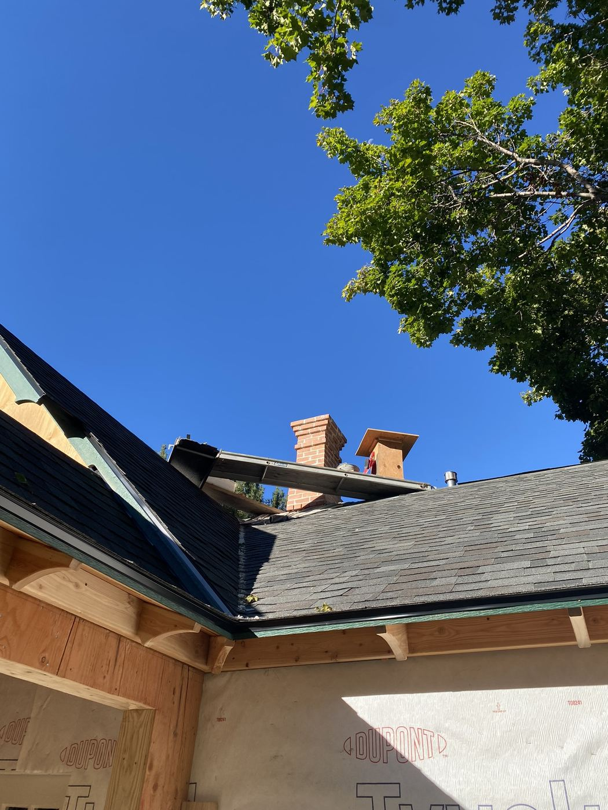
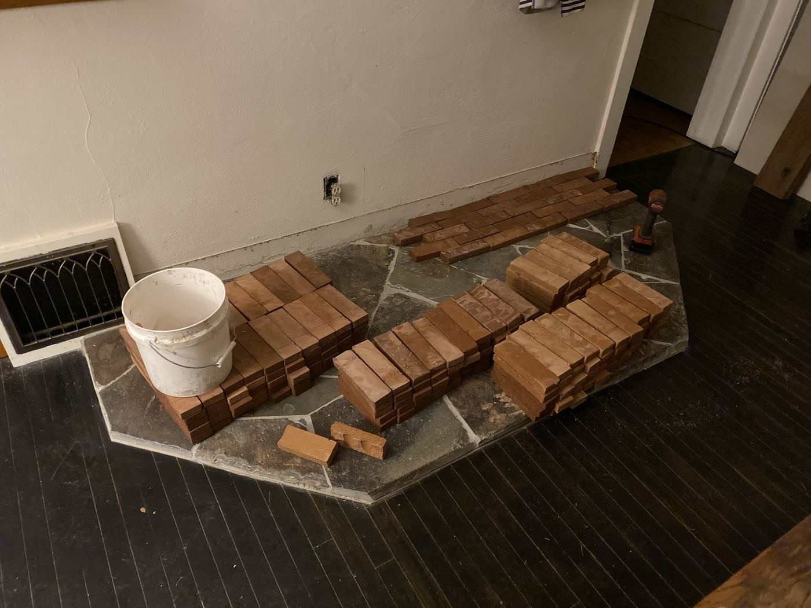
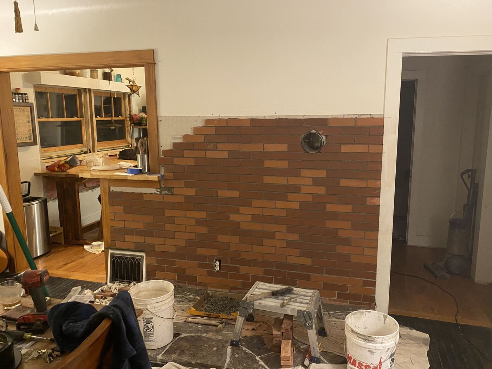
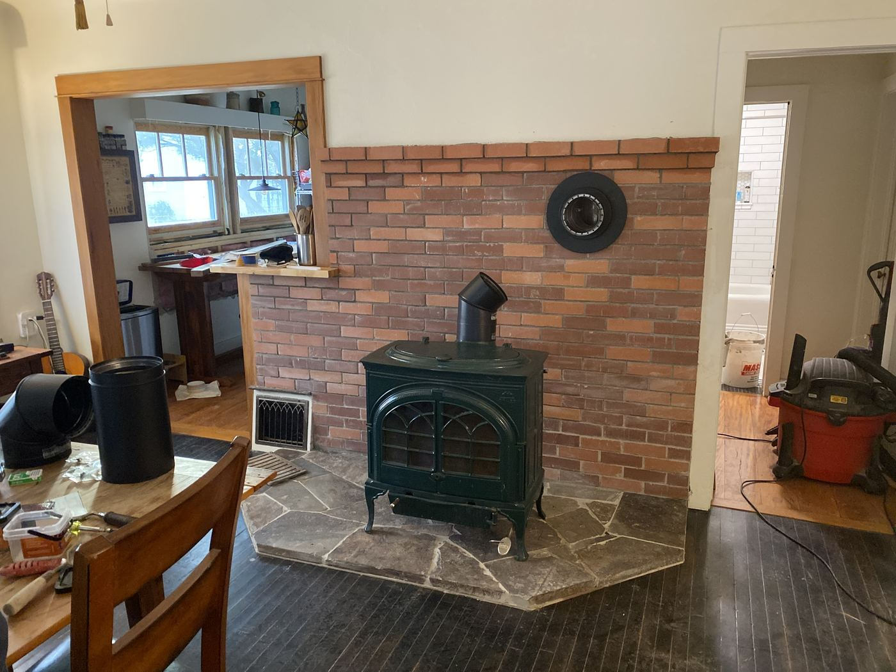
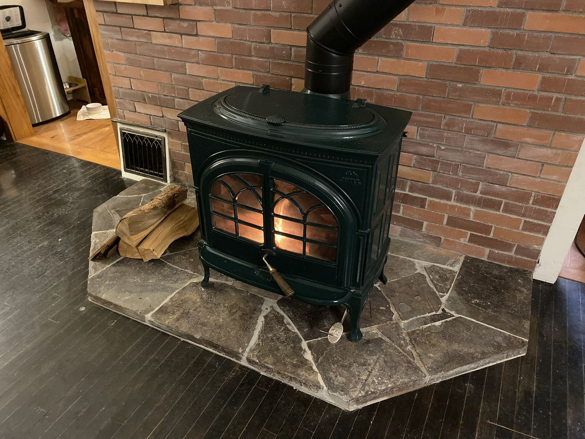
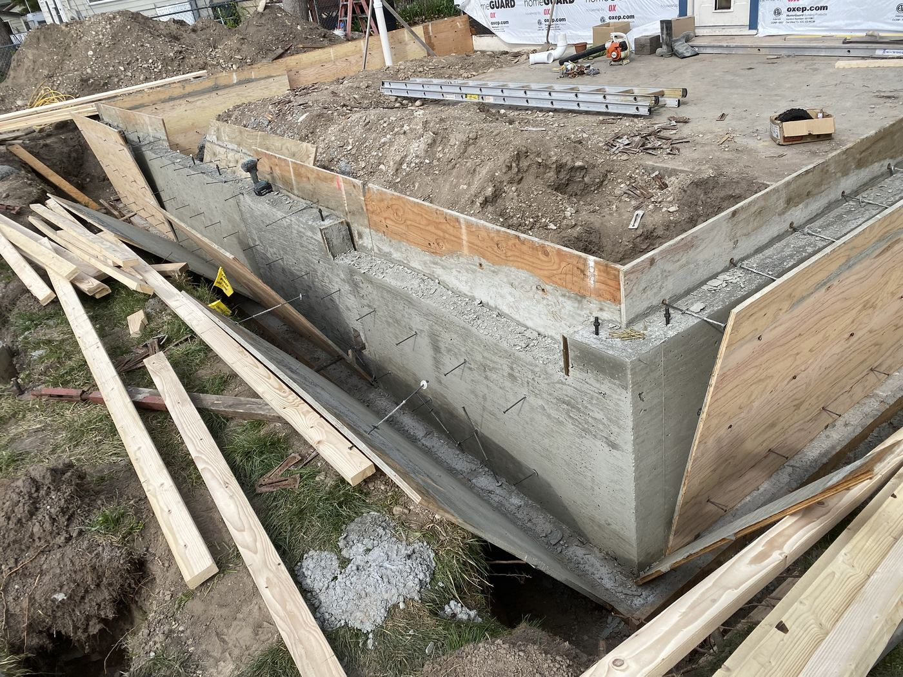
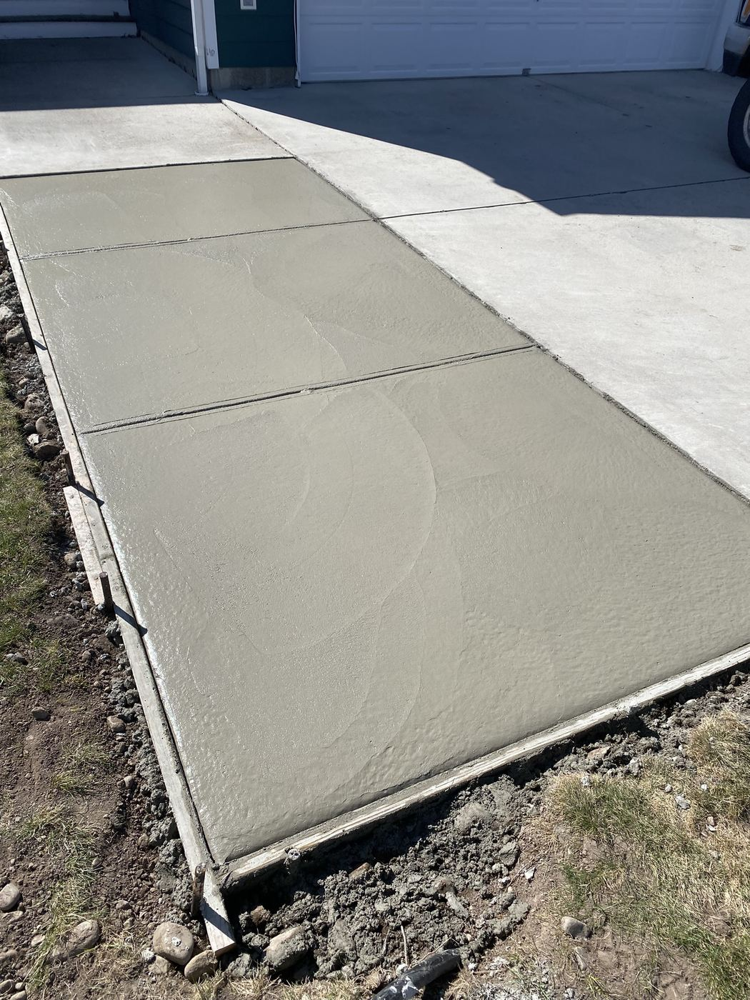
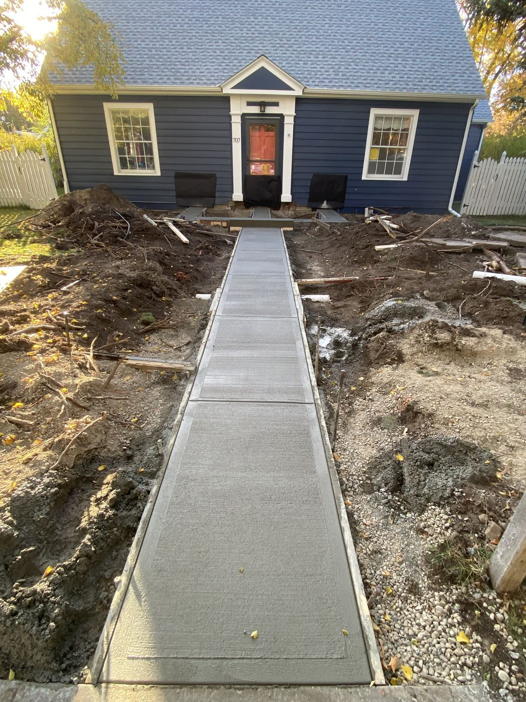
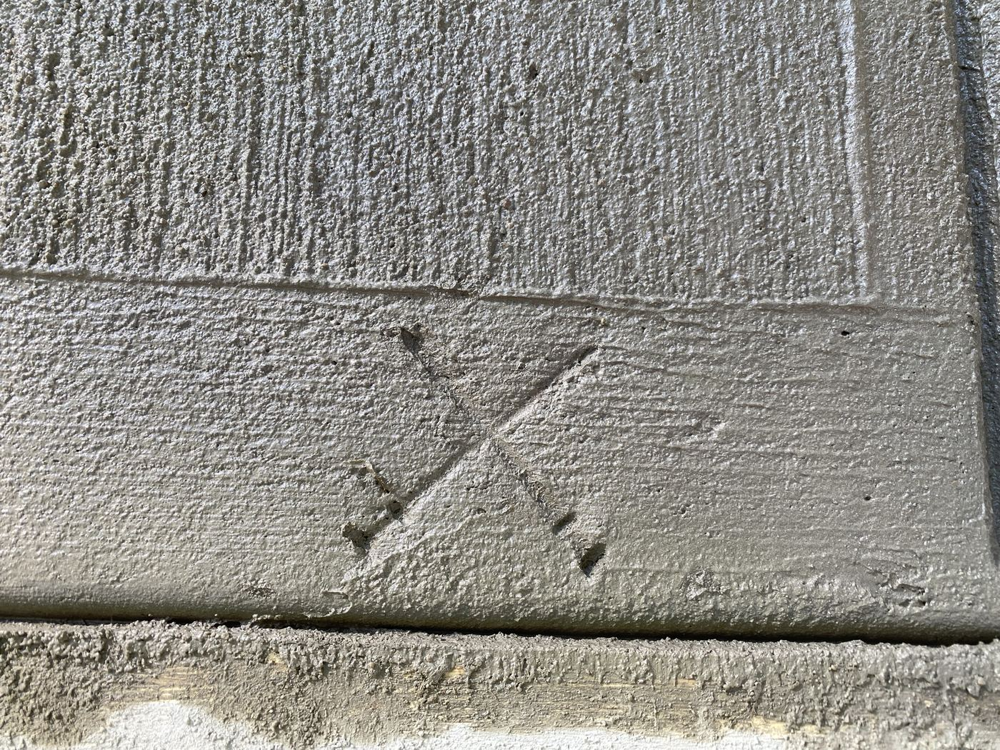
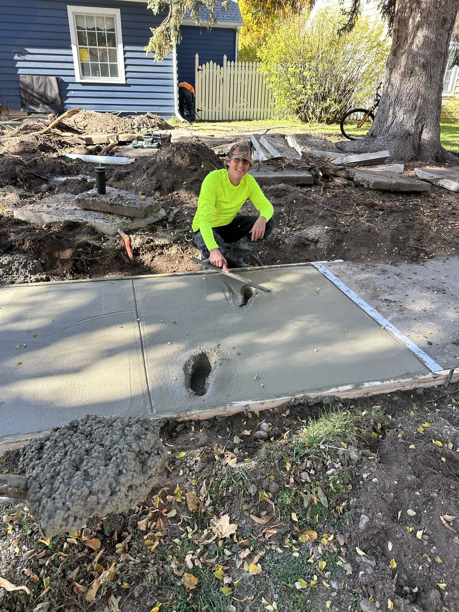